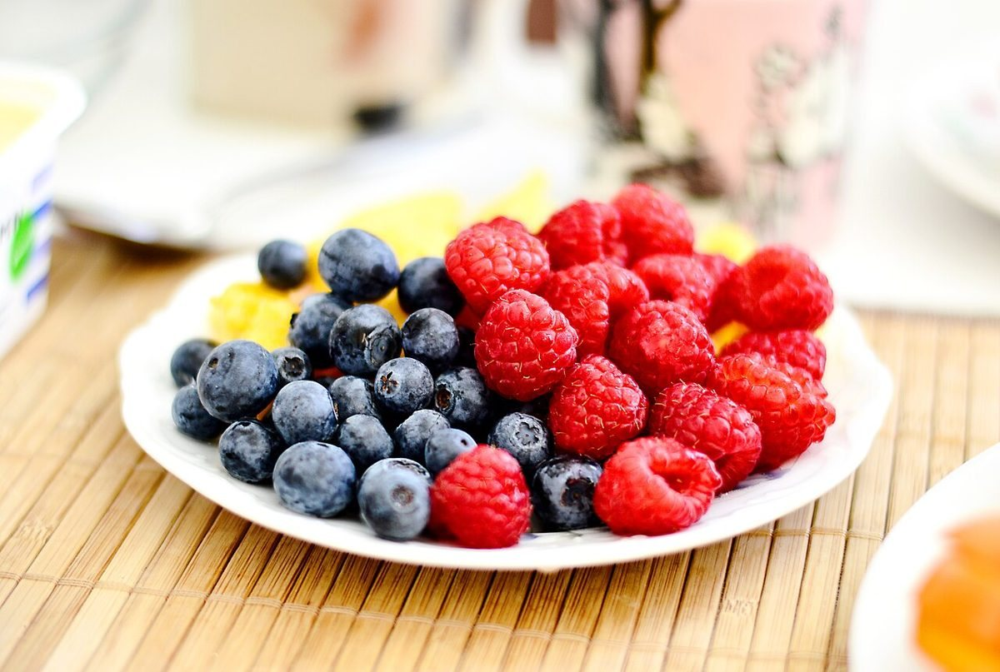
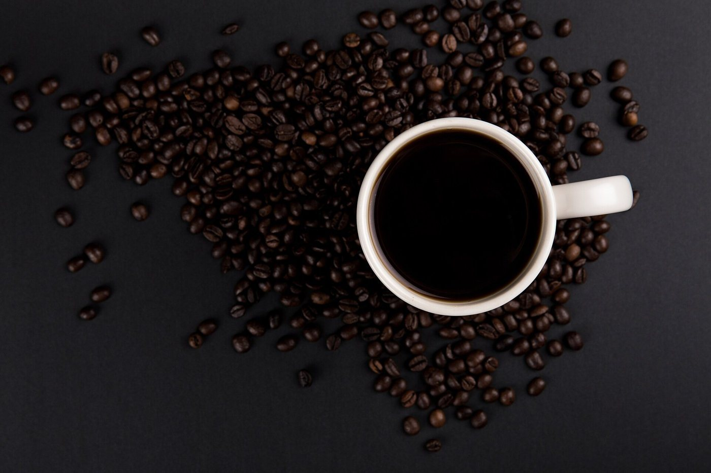
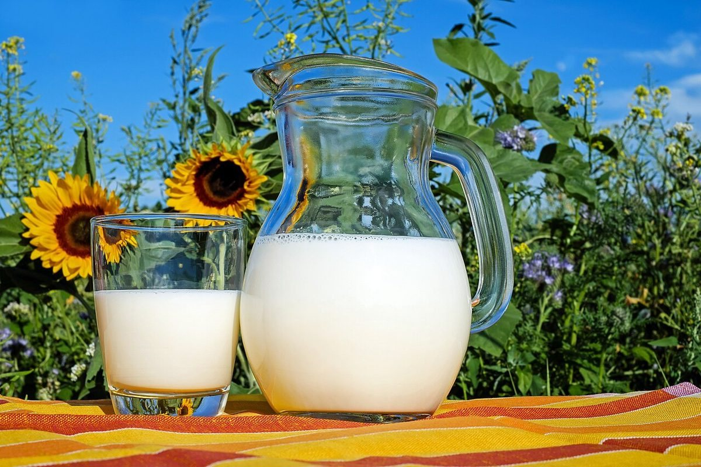
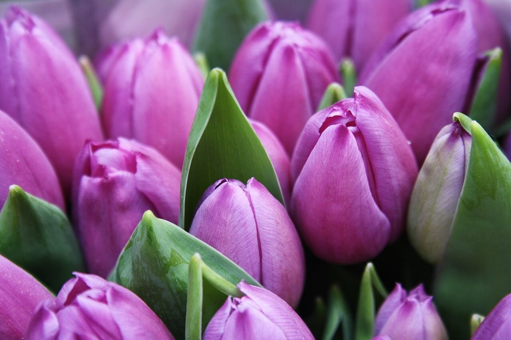
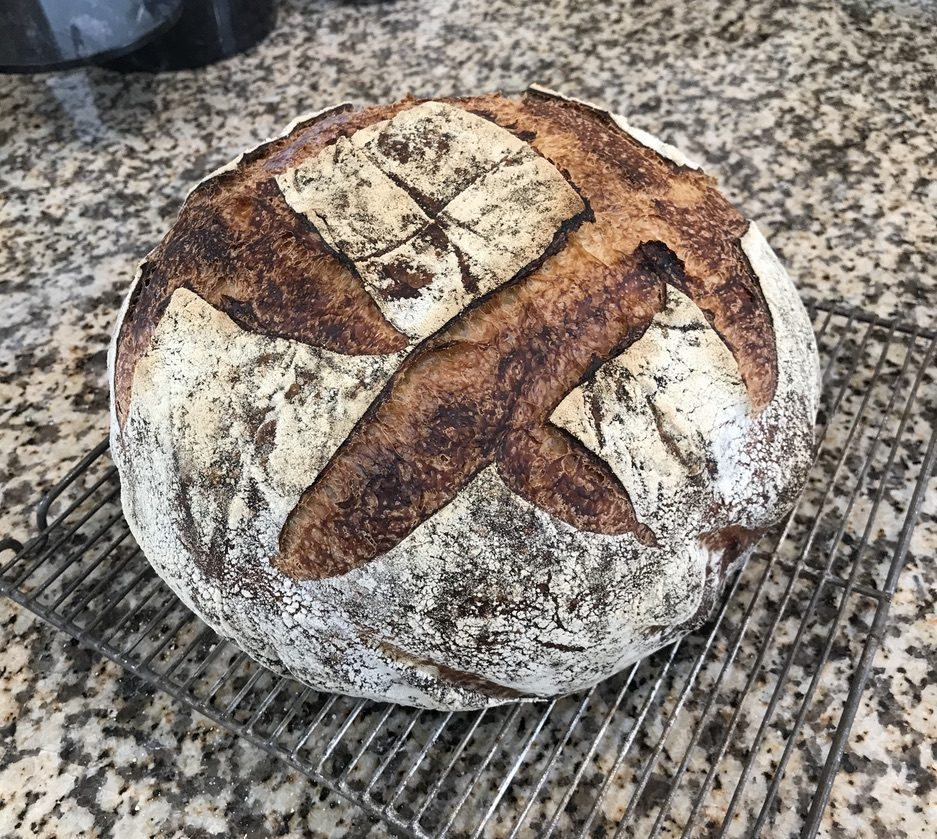
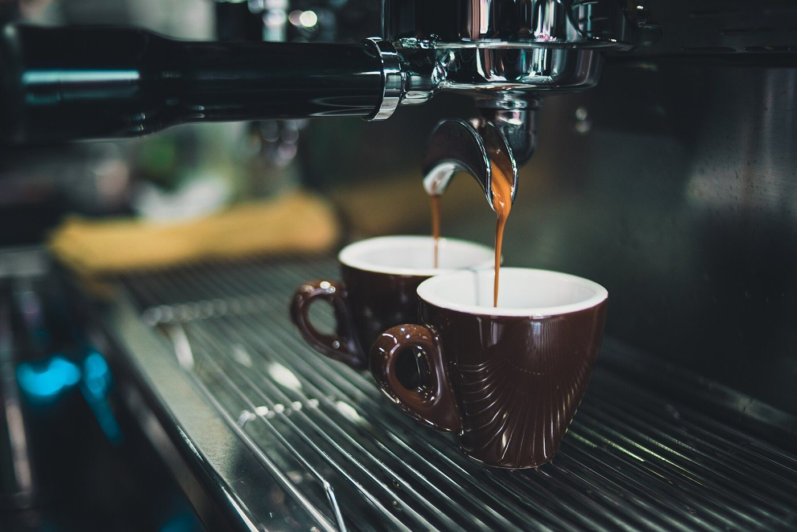
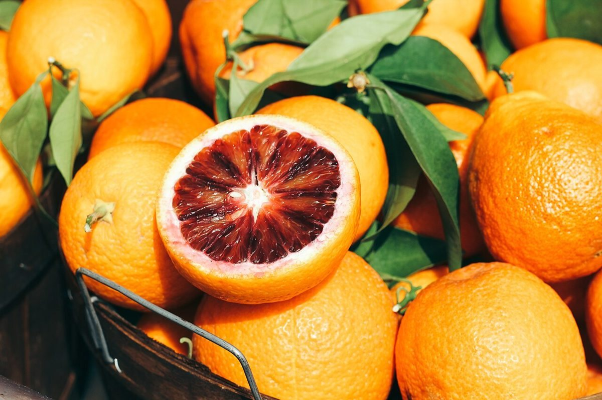
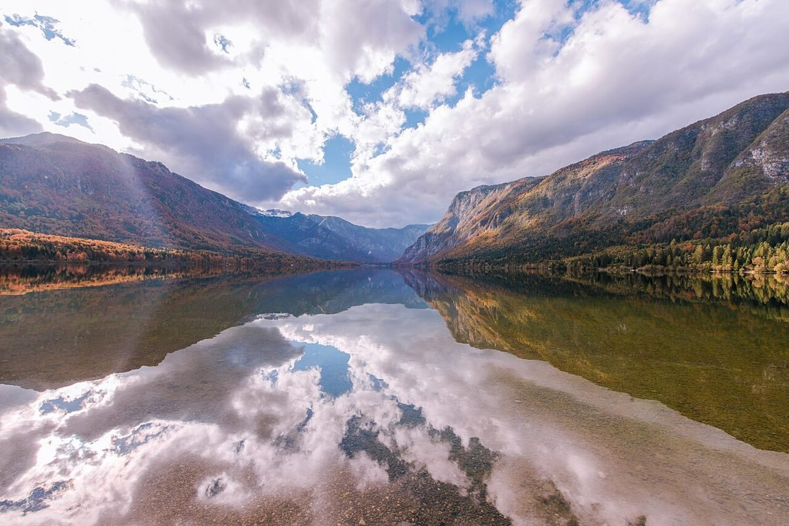
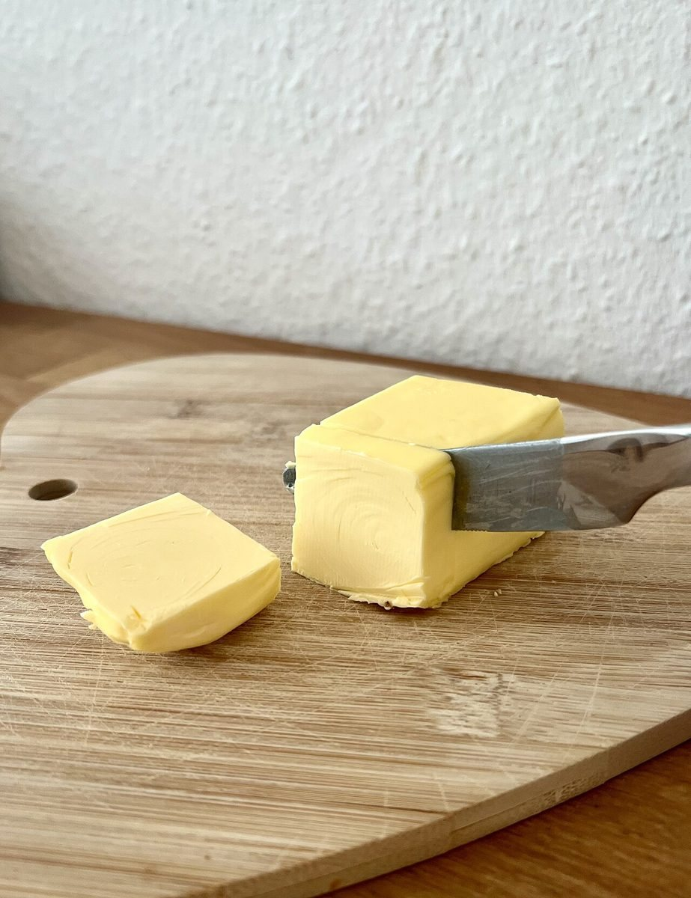
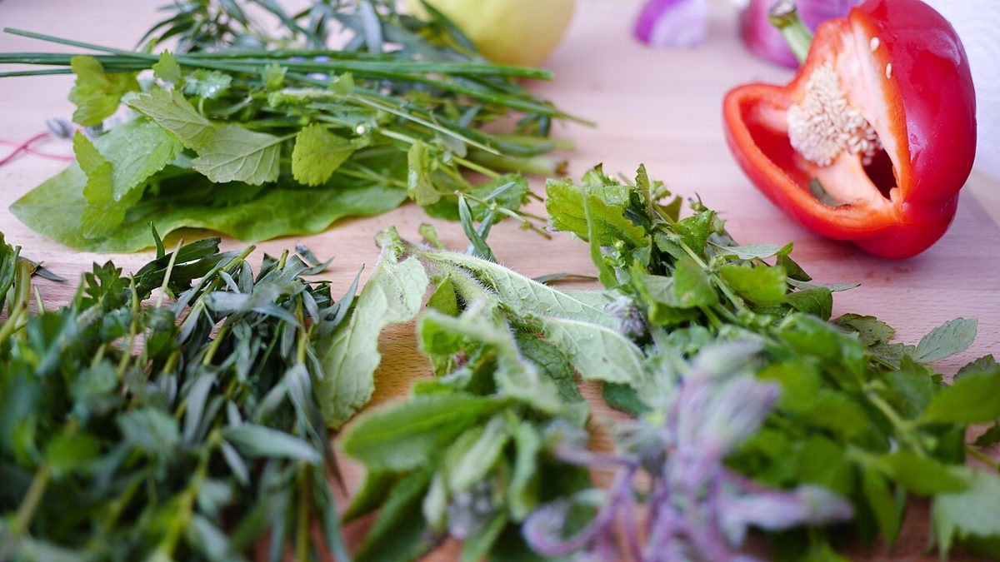

制作側の連想
耳栓ケースの部位を、配置図にしてみる
このサイトは、耳栓をしまっておく小さなケースを図にしたつもりで作りました。六つの部位に番号をふり、上の図と並べています。制作側の連想で、お店の理念・由来とは無関係です。実際の製品の仕様を示すものではありません。
凡例
六つの部位
- 1ふた閉じたとき中身をおおう、開け閉めする側の殻です。
- 2ヒンジふたと本体をつなぐ、折れ曲がる継ぎ目の部分。
- 3本体耳栓をおさめる、くぼみのある下側の殻です。
- 4耳栓ケースにおさまる、先のすぼまった小さな栓。
- 5連結コード左右の耳栓をつなぐ、細い紐のような部材です。
- 6留め爪(ラッチ)閉じたふたを止めておく、小さな爪の部分。
写真(イメージ)
写真(イメージ)






写真はイメージです。お店のものではありません。
ご案内
お店のこと(確認できたものだけ)
| 所在地 | 〒629-3245 京都府京丹後市網野町浜詰７５７−１ |
|---|---|
| 電話 | 準備中 |
| 営業時間 | 準備中 |
| 定休日 | 準備中 |
| ご予約 | 準備中 |
| 駐車場 | 準備中 |
| SNS | Instagram @cafe_kousyumaru |